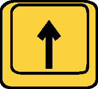
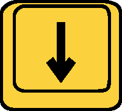

원거리 무기
몬스터 헌터의 원거리 무기들은 전장을 넓게 활용하며,
중, 장거린에서 몬스터를 제압할 수 있는 전술적 무기군입니다.
라이트 보우건, 헤비 보우건, 활로 구성된 이 무기들은 각각의 특성에 따라 속사, 차지, 상태이상, 고화력 등
다양한 전투 방식을 제공합니다.
원거리 무기 기본 조작
| 동작 | PC | Xbox/콘솔 | 설명 |
|---|---|---|---|
| 조준/집중 모드 | LT 길게 | 카메라 중심에 조준을 맞춘다. | |
| 발사 | RT 놓기 | 차지한 활을 발사. | |
| 탄/병 선택 | 콤보 중  or  | LB 길게 누르기 + Y or A | 소지한 탄 중에서 선택 가능한 탄을 선택한다. 병을 선택한다. |
| 탄/병 장전 | Y | 선택한 탄/병을 리로드 한다. |